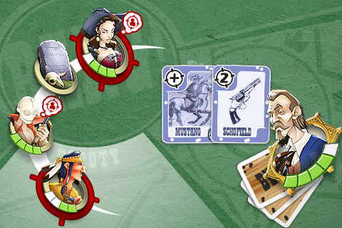
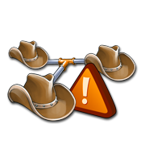

Rôles et objectifs
Tous les rôles vous sont présentés au début de chaque partie : touchez chacun d'entre eux pour en savoir davantage sur les objectifs correspondants.Détails des personnages
Juste après la présentation des rôles, tous les personnages apparaissent : touchez l'un d'entre eux pour en apprendre davantage. Remarque : il n'y a pas de caractéristiques spécifiques en mode "Facile".Interaction dans BANG!
L'écran est divisé en secteurs appartenant chacun à un joueur différent. L'image ci-dessous vous présente les éléments les plus intéressants :
- Votre personnage !
- Vos points de vie
- Votre main (invisible aux autres joueurs)
- Vos cartes en jeu (sur la table)
- Caractéristique spécifique : lorsque l'option est disponible, ces rayures jaunes apparaissent sur le personnage. Touchez-les pour activer la caractéristique (Remarque : les caractéristiques des personnages ne sont pas disponibles en mode Facile).
- La cible rouge indique que le personnage est à portée de tir (vous pouvez lui tirer dessus).
- La bulle rouge portant le symbole d'un joueur visé indique un danger : cet adversaire peut vous tirer dessus (vous êtes à portée de tir).
- Ce cadre de personnage en forme d'étoile indique le Shérif (vous le retrouvez également en arrière-plan de son secteur). Le rôle du Shérif est connu de tous, tandis que les autres rôles restent secrets.
- La pioche
- La défausse
- Votre rôle est indiqué au centre de la table : les autres joueurs ne peuvent pas le voir, à moins que vous ne soyez Shérif.
- La barre d'aide : vous y trouverez des indices, des conseils ou des informations sur les cartes sélectionnées (maintenez votre doigt sur la carte pour faire défiler les informations).
- Cartes en jeu d'un adversaire (sur la table).
- Cartes en main d'un adversaire.
- Adversaire éliminé : lorsqu'un joueur est à terre, son rôle apparaît dans le secteur correspondant.
- Touchez cet endroit pour atteindre le menu pause.
- Ce bouton sert à terminer son tour : faites-le glisser pour passer la main.
Cartes de jeu
Pour en savoir plus sur une carte précise, maintenez votre doigt dessus : des explications sur la carte apparaîtront dans la barre d'aide, en haut de l'écran.Certaines cartes doivent être jouées contre une seule cible, d'autres doivent être posées sur la table devant vous ou directement jouées et défaussées.
Pour sélectionner une carte dans votre main, touchez-la, puis touchez la cible. Vous pouvez également faire glisser la carte sur la cible.
Si la carte ne requiert pas de cible spécifique, touchez le centre de la table ou faites-la glisser.
Les cartes jouables sont toujours en surbrillance, tandis que celles que vous ne pouvez pas jouer sont grisées.
Vous ne pouvez jouer qu'une seule carte BANG! par tour, à moins que votre arme ne soit un Volcanic. Toutes les cartes à bord bleu doivent être posées sur la table devant vous lorsqu'elles sont jouées, à l'exception de la carte Prison, jouée directement contre un autre joueur.
Vous ne pouvez disposer que d'une seule arme face à vous (pour jouer une nouvelle arme, défaussez la précédente). Deux cartes du même nom ne peuvent être jouées en même temps, mais vous pouvez cependant avoir deux cartes aux effets similaires.
Les informations précises sur une carte sélectionnée s'affichent dans la barre d'aide en haut de l'écran.
Distance et portée de tir
Les joueurs situés directement à côté de vous sont à une distance de 1. Les joueurs suivants (à gauche comme à droite) sont à une distance de 2 et ainsi de suite.Les distances peuvent être modifiées par les cartes à bord bleu mises en jeu. À l'origine, votre distance de tir est de 1, vous ne pouvez donc pas tirer à une distance de 2 ou plus au départ, mais de nombreuses armes étendent votre portée de tir à 2 ou plus.
Les cartes portant le symbole
 sont défensives : elles ajoutent 1 à la distance de base du joueur.
sont défensives : elles ajoutent 1 à la distance de base du joueur.Les cartes en jeu portant le symbole
 sont des cartes d'attaque : si vous jouez l'une de ces cartes, vous "verrez" les autres joueurs à une distance réduite de 1.
sont des cartes d'attaque : si vous jouez l'une de ces cartes, vous "verrez" les autres joueurs à une distance réduite de 1.Les principes des symboles
et sont complémentaires et il est préférable d'avoir les deux : le premier pour se défendre des joueurs à proximité, le second pour attaquer les joueurs plus éloignés. et affectent toutes les cartes précisant une distance de tir.C'est compliqué ? Ne vous inquiétez pas !
Toutes les modifications de distance sont appliquées automatiquement, vous n'avez donc pas à vous en soucier : rappelez-vous simplement qu'il vous faut les deux et que vous voulez empêchez les autres joueurs de les avoir !
Vue tactique
Pour vous aider à visualiser une distance, touchez votre personnage et votre cible, puis resserrez vos doigts pour dézoomer et atteindre la vue tactique :
- Les grands chiffres représentent la distance actuelle qui vous sépare du joueur correspondant. Vous remarquerez que les modifications de distance sont appliquées automatiquement.
- Les cartes situées aux extrémités représentent les rôles supposés de vos adversaires. Touchez-les pour modifier vos suppositions. Les rôles des joueurs éliminés et du Shérif sont ouvertement affichés.
Coup d'œil
Vous pouvez également toucher l'écran, puis écarter vos doigts, pour zoomer et obtenir des informations détaillées sur un joueur. Dans cet exemple, nous jetons un coup d'œil à Paul Regret.
Émoticônes
Lors des jeux en ligne, vous pouvez afficher des émoticônes sur votre personnage ou les envoyer à d'autres joueurs.
Pour utiliser des émoticônes appuyez cliquez et maintenez sur le caractère désiré (y compris le vôtre), puis sélectionnez l'émoticône que vous voulez montrer.
Réseau
Si vous voyez cette icône, votre connexion réseau peut être instable.